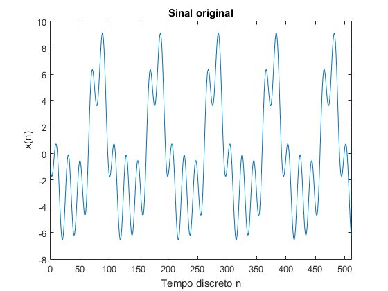
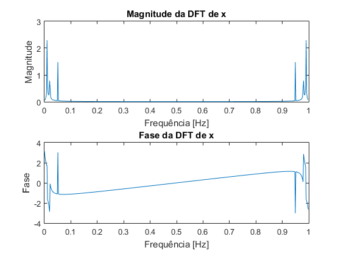
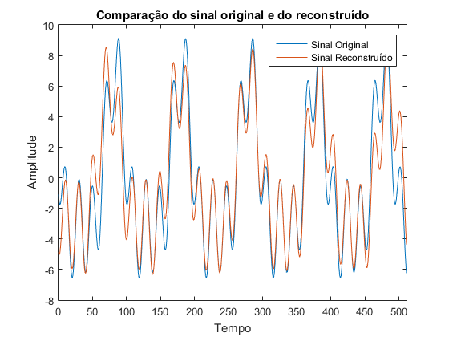
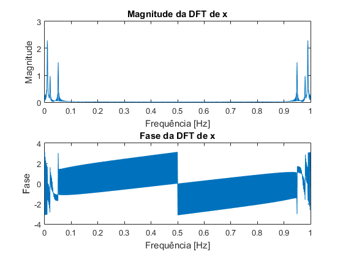
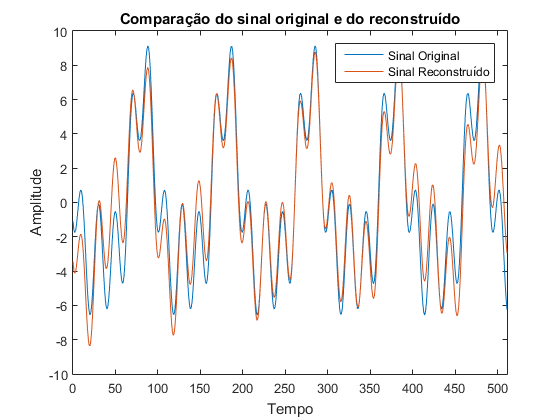
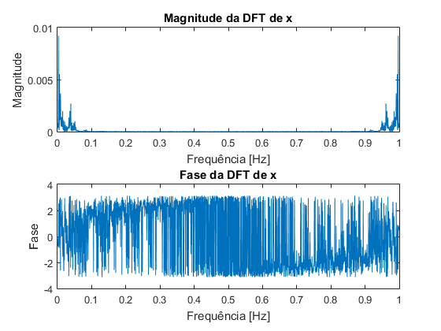
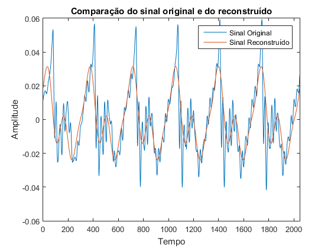

Contents
%%%%%%%%%%%%%%%%%%%%%%%%%%%%%%%%%%%%%%%%%%% % Segundo trabalho de laboratório de PDS % 2020/2021 % % Turno de 3ªfeira 14h % % Grupo 38 % João Silva 90803 % Vasco Araújo 90817 %%%%%%%%%%%%%%%%%%%%%%%%%%%%%%%%%%%%%%%%%%% close all; clear;
1a
%Constants
M = 512;
w0 = 5.2* 2*pi/M;
n = 0:M-1;
x = 5*cos(w0*n + 1) + 2*cos(2*w0*n + 2) + 3*cos(5*w0*n + 3);
1b
plot(n, x); xlabel('Tempo discreto n'); ylabel('x(n)'); title('Sinal original'); xlim([0, M-1]);
O sinal x é um sinal resultante da soma de 3 sinais sinusoidais de frequências, magnitudes e fases diferentes. Esta soma resulta num sinal que difere dos 3 sinais dos quais este consiste.
1c
N = 512; X = fft(x, N)/N; freq = (0:N-1)/N; figure(); subplot(2, 1, 1); plot(freq, abs(X)); xlabel('Frequência [Hz]'); ylabel('Magnitude'); title('Magnitude da DFT de x'); subplot(2, 1, 2); plot(freq, angle(X)); xlabel('Frequência [Hz]'); ylabel('Fase'); title('Fase da DFT de x');
Analisando o plot da magnitude podemos observar 3 picos principais (em cada meio espectro), que correspondem às frequências de cada cosseno que constitui o sinal x. Sabendo em que frequência estes picos ocorrem podemos obter a fase correspondente e assim reconstruir o sinal como faremos na secção seguinte.
1d
xr = 2.294*cos(2*pi*0.009766*n+1.661) ... + 0.7867*cos(2*pi*0.01953*n - 2.867) ... + 1.479*cos(2*pi*0.05078*n + 3.021); xr = 2*xr;
1e
figure() plot(n, x); hold on; plot(n, xr); xlim([0, M-1]); xlabel('Tempo'); ylabel('Amplitude'); title('Comparação do sinal original e do reconstruído'); legend('Sinal Original', 'Sinal Reconstruído');
Como se pode ver, o sinal reconstruído é semelhante ao sinal original. No entanto como se pode observar nos instantes entre n=60 e n=100 e entre N=460 e n=512, há momentos em que o sinal reconstruído diverge do original. Isto é devido ao facto de não estarmos a usar um comprimento da Discrete Fourier Transform grande o suficiente, N = 512. Isto resulta numa falta de resolução e faz com que o pico no plot da magnitude não seja na frequência exatamente igual à original, causando assim estas diferenças entre o sinal original e reconstruído. É também necessário duplicar a amplitude de cada componente devido ao facto de a magnitude apresentada ser apenas metade da amplitude real. Quando normalizamos a fft para o número de pontos do sinal consideramos todos os pontos, mas para recriar considerámos apenas o lado positivo do espectro. Assim sendo é necessário multiplicar por 2 para reconstruir o sinal fielmente.
1f
N = 1024; X = fft(x, N)/M; freq = (0:N-1)/N; %Plot signal spectrum with N = 1024 figure(); subplot(2, 1, 1); plot(freq, abs(X)); xlabel('Frequência [Hz]'); ylabel('Magnitude'); title('Magnitude da DFT de x'); subplot(2, 1, 2); plot(freq, angle(X)); xlabel('Frequência [Hz]'); ylabel('Fase'); title('Fase da DFT de x'); %Get new reconstructed signal based on the information of the spectrum xr = 2.294*cos(2*pi*0.009766*n+1.661) ... +0.9745*cos(2*pi*0.02051*n + 1.618) ... + 1.479*cos(2*pi*0.05078*n + 3.021); xr = 2*xr; %Compare original and reconstructed signals figure() plot(n, x); hold on; plot(n, xr); xlim([0, M-1]); xlabel('Tempo'); ylabel('Amplitude'); title('Comparação do sinal original e do reconstruído'); legend('Sinal Original', 'Sinal Reconstruído'); 
Comparado o sinal reconstruído nesta alinea com o da alinea anterior, pode-se ver que este segue o sinal original mais fielmente. Isto deve-se ao facto de termos usado o dobro do comprimento (N=1024) para a DFT do que o usado anteriormente o que permite que haja uma maior resolução no plot da magnitude e fase da fft. Isto permite que consigamos adquirir informação mais correcta. Quanto maior a resolução mais próxima a frequência do pico no plot de magnitude vai estar da frequência real. Tal como na pergunta anterior é necessário multiplicar a amplitude obtida através da DFT por 2 uma vez que se trata de um espectro bilateral.
2a
[x, Fs] = audioread('How_many_roads.wav');
soundsc(x, Fs);
2b
%Length of the segment we want to obtain M = 2048; %Sample from which our segment begins startingSample = 48500; segm = x(startingSample:startingSample+M-1);
2c
N = 2048; X = fft(segm, N)/N; freq = (0:N-1)/N; %Plot signal spectrum with N = 2048 figure(); subplot(2, 1, 1); plot(freq, abs(X)); xlabel('Frequência [Hz]'); ylabel('Magnitude'); title('Magnitude da DFT de x'); subplot(2, 1, 2); plot(freq, angle(X)); xlabel('Frequência [Hz]'); ylabel('Fase'); title('Fase da DFT de x');
2d
n = 0:M-1; %Sinal reconstruido xr = 0.0092*cos(2*pi*0.00293*n-0.6054) ... +0.0055*cos(2*pi*0.005859*n - 0.4384) ... + 0.0037*cos(2*pi*0.008789*n - 2.614); xr = xr*2; %Compara sinal original e reconstruido figure() plot(n, segm); hold on; plot(n, xr); xlim([0, M-1]); xlabel('Tempo'); ylabel('Amplitude'); title('Comparação do sinal original e do reconstruído'); legend('Sinal Original', 'Sinal Reconstruído');
O que se pode ver comparando o sinal reconstruido com o original é que estes não são muito semelhantes, ao contrário do que acontecia na primeira pergunta, embora o sinal reconstruido acompanhe a forma do sinal original. Isto sucede uma vez que o sinal original que queremos reconstruir é um sinal de voz, ou seja é demasiado complexo para ser reconstruido a partir de apenas 3 sinais sinusoidais.
2e
%Indices que correspondam a magnitudes inferiores a este valor são %eliminados. S_thres = 10; X = fft(x(:, 1)); X_n = X; %Magnitude e fase da fft do sinal. mgn = abs(X); ang = angle(X); %Passar a fft por um filtro para só guardar os indices que têm magnitude %acima de S_threshold, passar os outros indices para 0 low_inds = (mgn<=S_thres); X_n(low_inds) = 0; %Inverter a fft depois de filtrada através do comando ifft x_r = ifft(X_n); %Ouvir o sinal soundsc(x_r, Fs); %Número de coeficientes que foram eliminados coeff_num = sum(low_inds); %Quantos indices eliminámos fprintf('Eliminated %d coefficients, used %d \n', coeff_num, length(X)-coeff_num);
Eliminated 202849 coefficients, used 5022
Passando a fft por um filtro que preserva apenas os indices correspondentes a magnitudes superiores a um certo threshold e coloca todas as outras entradas a 0, é possível perceber quantos coeficientes são necessários para conseguir recriar o sinal original com muito menos coeficientes, conseguindo ainda compreender o seu conteudo. Com um threshold de 10 foi possível eliminar 202849 coeficientes, tendo usado 5022 coeficientes para recriar o sinal e ainda é possível ouvir as palavras do Professor Jorge Marques, ainda que sejam menos nitidas uma vez que há uma perda de qualidade por estarmos a usar um número reduzido de coeficientes.